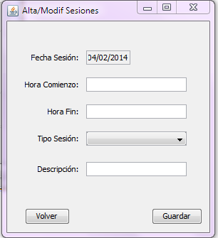

Alta/Modifica Sesiones
En esta ventana se permitirá añadir o modificar los siguientes datos:
- Fecha sesión: esta realizado a traves de un componente de calendario. El formato es dd/MM/yyyy.
- Hora comienzo: El formato es HH:mm.
- Hora fin: El formato es HH:mm.
- Tipo sesión: donde elegiremos entre Físico, Rocódromo, Roca.
- Descripción.
Después de insertar los datos pulsamos a "Guardar".
Volver al menú principal: Se volverán al menú principal del programa. Ver Menú Principal
